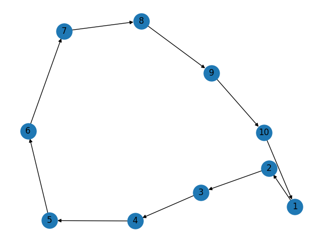
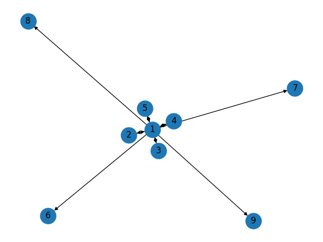
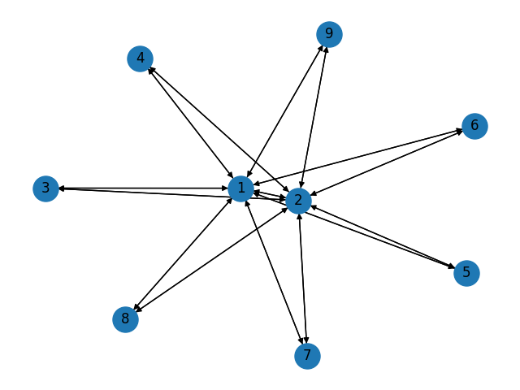
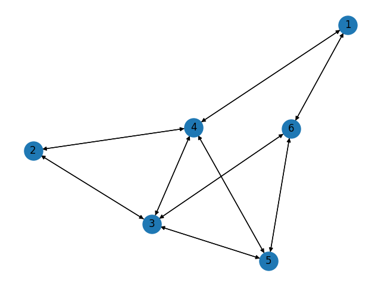

Matrix 0
1 2 3 4 5 6 7 8 9 10
_ _ _ _ _ _ _ _ _ _
1 | 0 1 1 1 1 1 1 1 1 1 x0 = -1
2 | 1 0 1 1 1 1 1 1 1 1 x1 = 9.00
3 | 1 1 0 1 1 1 1 1 1 1 x2 = -1.00
4 | 1 1 1 0 1 1 1 1 1 1 x3 = -1
5 | 1 1 1 1 0 1 1 1 1 1 x4 = -1
6 | 1 1 1 1 1 0 1 1 1 1 x5 = -1
7 | 1 1 1 1 1 1 0 1 1 1 x6 = -1.00
8 | 1 1 1 1 1 1 1 0 1 1 x7 = -1
9 | 1 1 1 1 1 1 1 1 0 1 x8 = -1
10 | 1 1 1 1 1 1 1 1 1 0 x9 = -1
Matrix 1

1 2 3 4 5 6 7 8 9 10
_ _ _ _ _ _ _ _ _ _
1 | 0 1 0 0 0 0 0 0 0 0 x0 = -1.00+0.00j
2 | 0 0 1 0 0 0 0 0 0 0 x1 = -0.81+0.59j
3 | 0 0 0 1 0 0 0 0 0 0 x2 = -0.81-0.59j
4 | 0 0 0 0 1 0 0 0 0 0 x3 = -0.31+0.95j
5 | 0 0 0 0 0 1 0 0 0 0 x4 = -0.31-0.95j
6 | 0 0 0 0 0 0 1 0 0 0 x5 = 0.31+0.95j
7 | 0 0 0 0 0 0 0 1 0 0 x6 = 0.31-0.95j
8 | 0 0 0 0 0 0 0 0 1 0 x7 = 1.00+0.00j
9 | 0 0 0 0 0 0 0 0 0 1 x8 = 0.81+0.59j
10 | 1 0 0 0 0 0 0 0 0 0 x9 = 0.81-0.59j
Matrix 2
1 2 3 4 5 6 7 8 9
_ _ _ _ _ _ _ _ _
1 | 0 1 1 1 1 1 1 1 1 x0 = 0.00
2 | 0 0 0 0 0 0 0 0 0 x1 = 0.00
3 | 0 0 0 0 0 0 0 0 0 x2 = 0.00
4 | 0 0 0 0 0 0 0 0 0 x3 = 0.00
5 | 0 0 0 0 0 0 0 0 0 x4 = 0.00
6 | 0 0 0 0 0 0 0 0 0 x5 = 0.00
7 | 0 0 0 0 0 0 0 0 0 x6 = 0.00
8 | 0 0 0 0 0 0 0 0 0 x7 = 0.00
9 | 0 0 0 0 0 0 0 0 0 x8 = 0.00
Matrix 3
1 2 3 4 5 6 7 8 9
_ _ _ _ _ _ _ _ _
1 | 0 1 1 1 1 1 1 1 1 x0 = 1.00
2 | 1 0 0 0 0 0 0 0 0 x1 = -1.00
3 | 0 0 0 0 0 0 0 0 0 x2 = 0.00
4 | 0 0 0 0 0 0 0 0 0 x3 = 0.00
5 | 0 0 0 0 0 0 0 0 0 x4 = 0.00
6 | 0 0 0 0 0 0 0 0 0 x5 = 0.00
7 | 0 0 0 0 0 0 0 0 0 x6 = 0.00
8 | 0 0 0 0 0 0 0 0 0 x7 = 0.00
9 | 0 0 0 0 0 0 0 0 0 x8 = 0.00
Matrix 4
1 2 3 4 5 6 7 8 9
_ _ _ _ _ _ _ _ _
1 | 0 1 1 1 1 1 1 1 1 x0 = 1.41
2 | 1 0 0 0 0 0 0 0 0 x1 = -1.41
3 | 1 0 0 0 0 0 0 0 0 x2 = 0.00
4 | 0 0 0 0 0 0 0 0 0 x3 = 0.00
5 | 0 0 0 0 0 0 0 0 0 x4 = 0.00
6 | 0 0 0 0 0 0 0 0 0 x5 = 0.00
7 | 0 0 0 0 0 0 0 0 0 x6 = 0.00
8 | 0 0 0 0 0 0 0 0 0 x7 = 0.00
9 | 0 0 0 0 0 0 0 0 0 x8 = 0.00
Matrix 5
1 2 3 4 5 6 7 8 9
_ _ _ _ _ _ _ _ _
1 | 0 1 1 1 1 1 1 1 1 x0 = 1.73
2 | 1 0 0 0 0 0 0 0 0 x1 = -1.73
3 | 1 0 0 0 0 0 0 0 0 x2 = 0.00
4 | 1 0 0 0 0 0 0 0 0 x3 = 0.00
5 | 0 0 0 0 0 0 0 0 0 x4 = 0.00
6 | 0 0 0 0 0 0 0 0 0 x5 = 0.00
7 | 0 0 0 0 0 0 0 0 0 x6 = 0.00
8 | 0 0 0 0 0 0 0 0 0 x7 = 0.00
9 | 0 0 0 0 0 0 0 0 0 x8 = 0.00
Matrix 6

1 2 3 4 5 6 7 8 9
_ _ _ _ _ _ _ _ _
1 | 0 1 1 1 1 1 1 1 1 x0 = 2.00
2 | 1 0 0 0 0 0 0 0 0 x1 = -2.00
3 | 1 0 0 0 0 0 0 0 0 x2 = 0.00
4 | 1 0 0 0 0 0 0 0 0 x3 = 0.00
5 | 1 0 0 0 0 0 0 0 0 x4 = 0.00
6 | 0 0 0 0 0 0 0 0 0 x5 = 0.00
7 | 0 0 0 0 0 0 0 0 0 x6 = 0.00
8 | 0 0 0 0 0 0 0 0 0 x7 = 0.00
9 | 0 0 0 0 0 0 0 0 0 x8 = 0.00
Matrix 7

1 2 3 4 5 6 7 8 9
_ _ _ _ _ _ _ _ _
1 | 0 1 1 1 1 1 1 1 1 x0 = 2.24
2 | 1 0 0 0 0 0 0 0 0 x1 = -2.24
3 | 1 0 0 0 0 0 0 0 0 x2 = 0.00
4 | 1 0 0 0 0 0 0 0 0 x3 = 0.00
5 | 1 0 0 0 0 0 0 0 0 x4 = 0.00
6 | 1 0 0 0 0 0 0 0 0 x5 = 0.00
7 | 0 0 0 0 0 0 0 0 0 x6 = 0.00
8 | 0 0 0 0 0 0 0 0 0 x7 = 0.00
9 | 0 0 0 0 0 0 0 0 0 x8 = 0.00
Matrix 8
1 2 3 4 5 6 7 8 9
_ _ _ _ _ _ _ _ _
1 | 0 1 1 1 1 1 1 1 1 x0 = 2.45
2 | 1 0 0 0 0 0 0 0 0 x1 = -2.45
3 | 1 0 0 0 0 0 0 0 0 x2 = 0.00
4 | 1 0 0 0 0 0 0 0 0 x3 = 0.00
5 | 1 0 0 0 0 0 0 0 0 x4 = 0.00
6 | 1 0 0 0 0 0 0 0 0 x5 = 0.00
7 | 1 0 0 0 0 0 0 0 0 x6 = 0.00
8 | 0 0 0 0 0 0 0 0 0 x7 = 0.00
9 | 0 0 0 0 0 0 0 0 0 x8 = 0.00
Matrix 9
1 2 3 4 5 6 7 8 9
_ _ _ _ _ _ _ _ _
1 | 0 1 1 1 1 1 1 1 1 x0 = 2.65
2 | 1 0 0 0 0 0 0 0 0 x1 = -2.65
3 | 1 0 0 0 0 0 0 0 0 x2 = 0.00
4 | 1 0 0 0 0 0 0 0 0 x3 = 0.00
5 | 1 0 0 0 0 0 0 0 0 x4 = 0.00
6 | 1 0 0 0 0 0 0 0 0 x5 = 0.00
7 | 1 0 0 0 0 0 0 0 0 x6 = 0.00
8 | 1 0 0 0 0 0 0 0 0 x7 = 0.00
9 | 0 0 0 0 0 0 0 0 0 x8 = 0.00
Matrix 10
1 2 3 4 5 6 7 8 9
_ _ _ _ _ _ _ _ _
1 | 0 1 1 1 1 1 1 1 1 x0 = 2.83
2 | 1 0 0 0 0 0 0 0 0 x1 = -2.83
3 | 1 0 0 0 0 0 0 0 0 x2 = 0.00
4 | 1 0 0 0 0 0 0 0 0 x3 = 0.00
5 | 1 0 0 0 0 0 0 0 0 x4 = 0.00
6 | 1 0 0 0 0 0 0 0 0 x5 = 0.00
7 | 1 0 0 0 0 0 0 0 0 x6 = 0.00
8 | 1 0 0 0 0 0 0 0 0 x7 = 0.00
9 | 1 0 0 0 0 0 0 0 0 x8 = 0.00
Matrix 11
1 2 3 4 5 6 7 8 9 10
_ _ _ _ _ _ _ _ _ _
1 | 0 1 1 1 1 1 1 1 1 1 x0 = 3.00
2 | 1 0 0 0 0 0 0 0 0 0 x1 = -3.00
3 | 1 0 0 0 0 0 0 0 0 0 x2 = 0.00
4 | 1 0 0 0 0 0 0 0 0 0 x3 = 0.00
5 | 1 0 0 0 0 0 0 0 0 0 x4 = 0.00
6 | 1 0 0 0 0 0 0 0 0 0 x5 = 0.00
7 | 1 0 0 0 0 0 0 0 0 0 x6 = 0.00
8 | 1 0 0 0 0 0 0 0 0 0 x7 = 0.00
9 | 1 0 0 0 0 0 0 0 0 0 x8 = 0.00
10 | 1 0 0 0 0 0 0 0 0 0 x9 = 0.00
Matrix 12
1 2 3 4 5 6 7 8 9 10 11 12 13 14 15 16 17 18 19 20 21 22 23 24 25 26 27 28 29 30
_ _ _ _ _ _ _ _ _ _ _ _ _ _ _ _ _ _ _ _ _ _ _ _ _ _ _ _ _ _
1 | 0 1 1 1 1 1 1 1 1 1 1 1 1 1 1 1 1 1 1 1 1 1 1 1 1 1 1 1 1 1 x0 = 5.39
2 | 1 0 0 0 0 0 0 0 0 0 0 0 0 0 0 0 0 0 0 0 0 0 0 0 0 0 0 0 0 0 x1 = -5.39
3 | 1 0 0 0 0 0 0 0 0 0 0 0 0 0 0 0 0 0 0 0 0 0 0 0 0 0 0 0 0 0 x2 = 0.00
4 | 1 0 0 0 0 0 0 0 0 0 0 0 0 0 0 0 0 0 0 0 0 0 0 0 0 0 0 0 0 0 x3 = 0.00
5 | 1 0 0 0 0 0 0 0 0 0 0 0 0 0 0 0 0 0 0 0 0 0 0 0 0 0 0 0 0 0 x4 = 0.00
6 | 1 0 0 0 0 0 0 0 0 0 0 0 0 0 0 0 0 0 0 0 0 0 0 0 0 0 0 0 0 0 x5 = 0.00
7 | 1 0 0 0 0 0 0 0 0 0 0 0 0 0 0 0 0 0 0 0 0 0 0 0 0 0 0 0 0 0 x6 = 0.00
8 | 1 0 0 0 0 0 0 0 0 0 0 0 0 0 0 0 0 0 0 0 0 0 0 0 0 0 0 0 0 0 x7 = 0.00
9 | 1 0 0 0 0 0 0 0 0 0 0 0 0 0 0 0 0 0 0 0 0 0 0 0 0 0 0 0 0 0 x8 = 0.00
10 | 1 0 0 0 0 0 0 0 0 0 0 0 0 0 0 0 0 0 0 0 0 0 0 0 0 0 0 0 0 0 x9 = 0.00
11 | 1 0 0 0 0 0 0 0 0 0 0 0 0 0 0 0 0 0 0 0 0 0 0 0 0 0 0 0 0 0 x10 = 0.00
12 | 1 0 0 0 0 0 0 0 0 0 0 0 0 0 0 0 0 0 0 0 0 0 0 0 0 0 0 0 0 0 x11 = 0.00
13 | 1 0 0 0 0 0 0 0 0 0 0 0 0 0 0 0 0 0 0 0 0 0 0 0 0 0 0 0 0 0 x12 = 0.00
14 | 1 0 0 0 0 0 0 0 0 0 0 0 0 0 0 0 0 0 0 0 0 0 0 0 0 0 0 0 0 0 x13 = 0.00
15 | 1 0 0 0 0 0 0 0 0 0 0 0 0 0 0 0 0 0 0 0 0 0 0 0 0 0 0 0 0 0 x14 = 0.00
16 | 1 0 0 0 0 0 0 0 0 0 0 0 0 0 0 0 0 0 0 0 0 0 0 0 0 0 0 0 0 0 x15 = 0.00
17 | 1 0 0 0 0 0 0 0 0 0 0 0 0 0 0 0 0 0 0 0 0 0 0 0 0 0 0 0 0 0 x16 = 0.00
18 | 1 0 0 0 0 0 0 0 0 0 0 0 0 0 0 0 0 0 0 0 0 0 0 0 0 0 0 0 0 0 x17 = 0.00
19 | 1 0 0 0 0 0 0 0 0 0 0 0 0 0 0 0 0 0 0 0 0 0 0 0 0 0 0 0 0 0 x18 = 0.00
20 | 1 0 0 0 0 0 0 0 0 0 0 0 0 0 0 0 0 0 0 0 0 0 0 0 0 0 0 0 0 0 x19 = 0.00
21 | 1 0 0 0 0 0 0 0 0 0 0 0 0 0 0 0 0 0 0 0 0 0 0 0 0 0 0 0 0 0 x20 = 0.00
22 | 1 0 0 0 0 0 0 0 0 0 0 0 0 0 0 0 0 0 0 0 0 0 0 0 0 0 0 0 0 0 x21 = 0.00
23 | 1 0 0 0 0 0 0 0 0 0 0 0 0 0 0 0 0 0 0 0 0 0 0 0 0 0 0 0 0 0 x22 = 0.00
24 | 1 0 0 0 0 0 0 0 0 0 0 0 0 0 0 0 0 0 0 0 0 0 0 0 0 0 0 0 0 0 x23 = 0.00
25 | 1 0 0 0 0 0 0 0 0 0 0 0 0 0 0 0 0 0 0 0 0 0 0 0 0 0 0 0 0 0 x24 = 0.00
26 | 1 0 0 0 0 0 0 0 0 0 0 0 0 0 0 0 0 0 0 0 0 0 0 0 0 0 0 0 0 0 x25 = 0.00
27 | 1 0 0 0 0 0 0 0 0 0 0 0 0 0 0 0 0 0 0 0 0 0 0 0 0 0 0 0 0 0 x26 = 0.00
28 | 1 0 0 0 0 0 0 0 0 0 0 0 0 0 0 0 0 0 0 0 0 0 0 0 0 0 0 0 0 0 x27 = 0.00
29 | 1 0 0 0 0 0 0 0 0 0 0 0 0 0 0 0 0 0 0 0 0 0 0 0 0 0 0 0 0 0 x28 = 0.00
30 | 1 0 0 0 0 0 0 0 0 0 0 0 0 0 0 0 0 0 0 0 0 0 0 0 0 0 0 0 0 0 x29 = 0.00
Matrix 13
1 2 3 4 5 6 7 8 9
_ _ _ _ _ _ _ _ _
1 | 0 1 1 1 1 1 1 1 1 x0 = 3.19
2 | 1 0 1 1 1 1 1 1 1 x1 = -2.19
3 | 1 0 0 0 0 0 0 0 0 x2 = -1.00
4 | 1 0 0 0 0 0 0 0 0 x3 = 0.00
5 | 1 0 0 0 0 0 0 0 0 x4 = 0.00
6 | 1 0 0 0 0 0 0 0 0 x5 = 0.00
7 | 1 0 0 0 0 0 0 0 0 x6 = 0.00
8 | 1 0 0 0 0 0 0 0 0 x7 = 0.00
9 | 1 0 0 0 0 0 0 0 0 x8 = 0.00
Matrix 14

1 2 3 4 5 6 7 8 9
_ _ _ _ _ _ _ _ _
1 | 0 1 1 1 1 1 1 1 1 x0 = 4.27
2 | 1 0 1 1 1 1 1 1 1 x1 = -1.00
3 | 1 1 0 0 0 0 0 0 0 x2 = -3.27
4 | 1 1 0 0 0 0 0 0 0 x3 = 0.00
5 | 1 1 0 0 0 0 0 0 0 x4 = 0.00
6 | 1 1 0 0 0 0 0 0 0 x5 = 0.00
7 | 1 1 0 0 0 0 0 0 0 x6 = 0.00
8 | 1 1 0 0 0 0 0 0 0 x7 = 0.00
9 | 1 1 0 0 0 0 0 0 0 x8 = 0.00
Matrix 15
1 2 3 4 5 6 7 8 9
_ _ _ _ _ _ _ _ _
1 | 0 1 1 1 1 1 1 1 1 x0 = -2.7320508075688794
2 | 1 0 1 0 0 0 0 0 0 x1 = 2.9999999999999973
3 | 1 1 0 0 0 0 0 0 0 x2 = 0.732050807568877
4 | 1 0 0 0 0 0 0 0 0 x3 = -1.0000000000000002
5 | 1 0 0 0 0 0 0 0 0 x4 = -3.851859888774472e-33
6 | 1 0 0 0 0 0 0 0 0 x5 = -1.1331166295921011e-17
7 | 1 0 0 0 0 0 0 0 0 x6 = 0.0
8 | 1 0 0 0 0 0 0 0 0 x7 = 0.0
9 | 1 0 0 0 0 0 0 0 0 x8 = 0.0
Matrix 16

1 2 3 4 5 6 7 8 9
_ _ _ _ _ _ _ _ _
1 | 0 1 1 1 1 1 1 1 1 x0 = 3.38+0.00j
2 | 1 0 1 0 0 0 0 0 0 x1 = -2.57+0.00j
3 | 1 1 0 0 0 0 0 0 1 x2 = -0.59+0.00j
4 | 1 0 0 0 0 0 0 0 0 x3 = 0.78+0.00j
5 | 1 0 0 0 0 0 0 0 0 x4 = -1.62+0.00j
6 | 1 0 0 0 0 0 0 0 0 x5 = 0.62+0.00j
7 | 1 0 0 0 0 0 0 0 0 x6 = 0.00+0.00j
8 | 1 0 0 0 0 0 0 0 1 x7 = 0.00-0.00j
9 | 1 0 1 0 0 0 0 1 0 x8 = 0.00+0.00j
Matrix 17
1 2 3 4 5 6 7 8 9
_ _ _ _ _ _ _ _ _
1 | 0 1 1 1 1 1 1 1 1 x0 = 3.50+0.00j
2 | 1 0 1 0 1 0 0 0 0 x1 = -2.43+0.00j
3 | 1 1 0 0 0 0 0 0 1 x2 = -1.67+0.00j
4 | 1 0 1 0 0 0 0 0 0 x3 = 0.74+0.00j
5 | 1 0 0 0 0 0 0 0 0 x4 = 0.27+0.26j
6 | 1 0 0 0 0 0 0 0 0 x5 = 0.27-0.26j
7 | 1 0 0 0 0 0 0 0 0 x6 = -0.68+0.00j
8 | 1 0 0 0 0 0 0 0 1 x7 = -0.00+0.00j
9 | 1 0 1 0 0 0 0 1 0 x8 = -0.00+0.00j
Matrix 18
1 2 3 4
_ _ _ _
1 | 1 1 1 0 x0 = -1.81
2 | 1 0 0 1 x1 = 2.34
3 | 1 0 0 1 x2 = 0.47
4 | 0 1 1 0 x3 = 0.00
Matrix 19
1 2 3 4
_ _ _ _
1 | 0 1 1 0 x0 = -2.00
2 | 1 0 0 1 x1 = 0.00
3 | 1 0 0 1 x2 = 2.00
4 | 0 1 1 0 x3 = 0.00
Matrix 20
1 2 3 4 5 6 7 8 9
_ _ _ _ _ _ _ _ _
1 | 0 1 1 1 1 1 1 1 1 x0 = 3.52+0.00j
2 | 1 0 1 0 0 0 0 0 0 x1 = -2.54+0.00j
3 | 1 1 0 0 1 0 0 0 1 x2 = -1.55+0.00j
4 | 1 0 1 0 0 0 0 0 0 x3 = 0.70+0.00j
5 | 1 0 0 0 0 0 0 0 0 x4 = -0.40+0.00j
6 | 1 0 0 0 0 0 0 0 0 x5 = 0.26+0.00j
7 | 1 0 0 0 0 0 0 0 0 x6 = 0.00+0.00j
8 | 1 0 0 0 0 0 0 0 1 x7 = -0.00+0.00j
9 | 1 0 1 0 0 0 0 1 0 x8 = -0.00-0.00j
Matrix 21
1 2 3 4 5 6 7 8 9
_ _ _ _ _ _ _ _ _
1 | 0 1 1 1 1 1 1 1 1 x0 = 3.61+0.00j
2 | 1 0 1 0 0 0 0 0 0 x1 = -2.42+0.00j
3 | 1 1 0 0 1 0 0 0 1 x2 = -1.54+0.00j
4 | 1 0 1 0 0 0 0 0 0 x3 = 1.16+0.00j
5 | 1 0 0 0 0 0 0 0 0 x4 = -0.23+0.22j
6 | 1 0 0 0 0 0 1 0 0 x5 = -0.23-0.22j
7 | 1 0 0 0 0 1 0 0 0 x6 = 0.65+0.00j
8 | 1 0 0 0 0 0 0 0 1 x7 = -1.00+0.00j
9 | 1 0 1 0 0 0 0 1 0 x8 = -0.00+0.00j
Matrix 22
1 2 3 4 5 6 7 8 9 10
_ _ _ _ _ _ _ _ _ _
1 | 0 1 0 0 0 0 0 0 1 1 x0 = 1.73
2 | 1 0 0 0 0 0 0 0 0 0 x1 = -1.73
3 | 0 0 0 0 0 0 0 0 0 0 x2 = 0.00
4 | 0 0 0 0 0 0 0 0 0 0 x3 = 0.00
5 | 0 0 0 0 0 0 0 0 0 0 x4 = 0.00
6 | 0 0 0 0 0 0 0 0 0 0 x5 = 0.00
7 | 0 0 0 0 0 0 0 0 0 0 x6 = 0.00
8 | 0 0 0 0 0 0 0 0 0 0 x7 = 0.00
9 | 1 0 0 0 0 0 0 0 0 0 x8 = 0.00
10 | 1 0 0 0 0 0 0 0 0 0 x9 = 0.00
Matrix 23
1 2 3 4 5 6 7 8 9 10
_ _ _ _ _ _ _ _ _ _
1 | 0 1 0 0 0 0 0 0 1 1 x0 = 1.73
2 | 1 0 0 0 0 0 0 0 0 0 x1 = -1.73
3 | 0 0 0 0 0 0 0 0 0 0 x2 = 0.00
4 | 0 0 0 0 0 0 0 0 0 0 x3 = 0.00
5 | 0 0 0 0 0 0 0 0 0 0 x4 = 0.00
6 | 0 0 0 0 0 0 0 0 0 0 x5 = 0.00
7 | 0 0 0 0 0 0 0 0 0 0 x6 = 0.00
8 | 0 0 0 0 0 0 0 0 0 0 x7 = 0.00
9 | 1 0 0 0 0 0 0 0 0 0 x8 = 0.00
10 | 1 0 0 0 0 0 0 0 0 0 x9 = 0.00
Matrix 24
1 2 3 4 5
_ _ _ _ _
1 | 0 0 1 1 0 x0 = 3.00
2 | 0 0 1 1 0 x1 = -2.00
3 | 1 1 0 1 1 x2 = -0.00
4 | 1 1 1 0 1 x3 = 0.00
5 | 0 0 1 1 0 x4 = -1.00
Matrix 25
1 2 3 4 5
_ _ _ _ _
1 | 0 1 0 0 1 x0 = -1.62
2 | 1 0 1 0 0 x1 = 0.62
3 | 0 1 0 1 0 x2 = 2.00
4 | 0 0 1 0 1 x3 = -1.62
5 | 1 0 0 1 0 x4 = 0.62
Matrix 26
1 2 3 4 5 6
_ _ _ _ _ _
1 | 0 0 1 1 0 1 x0 = 3.51
2 | 0 0 1 1 0 0 x1 = -2.18
3 | 1 1 0 1 1 1 x2 = 0.67
4 | 1 1 1 0 1 0 x3 = -0.00
5 | 0 0 1 1 0 1 x4 = -0.53
6 | 1 0 1 0 1 0 x5 = -1.48
Matrix 27

1 2 3 4 5 6
_ _ _ _ _ _
1 | 0 0 0 1 0 1 x0 = 3.17
2 | 0 0 1 1 0 0 x1 = -2.21
3 | 0 1 0 1 1 1 x2 = -1.51
4 | 1 1 1 0 1 0 x3 = 0.73
5 | 0 0 1 1 0 1 x4 = 0.28
6 | 1 0 1 0 1 0 x5 = -0.47